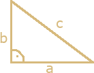

Strona z podręcznika
Twierdzenie Pitagorasa
Twierdzenie Pitagorasa najczęściej wykorzystujemy do obliczenia długości trzeciego boku trójkąta prostokątnego, w sytuacji gdy znamy długości dwóch pozostałych boków.
Twierdzenie
Jeśli trójkąt jest prostokątny, to suma kwadratów długości przyprostokątnych jest równa kwadratowi długości przeciwprostokątnej.

a2 + b2 = c2
Tabelka dokładnych wartości funkcji trygonometrycznych dla najczęściej spotykanych kątów
| $$\alpha$$ | $$0^{\circ}$$ | $$30^{\circ}$$ | $$45^{\circ}$$ | $$60^{\circ}$$ | $$90^{\circ}$$ |
|---|---|---|---|---|---|
| $$sin\alpha$$ | $$0$$ | $$\frac{1}{2}$$ | $$\frac{\sqrt{2}}{2}$$ | $$\frac{\sqrt{3}}{2}$$ | $$1$$ |
| $$cos\alpha$$ | $$1$$ | $$\frac{\sqrt{3}}{2}$$ | $$\frac{\sqrt{2}}{2}$$ | $$1/2$$ | $$0$$ |
| $$tg\alpha$$ | $$0$$ | $$\frac{\sqrt{3}}{3}$$ | $$1$$ | $$\sqrt{3}$$ | $$-$$ |
| $$ctg\alpha$$ | $$-$$ | $$\sqrt{3}$$ | $$1$$ | $$\frac{\sqrt{3}}{3}$$ | $$0$$ |